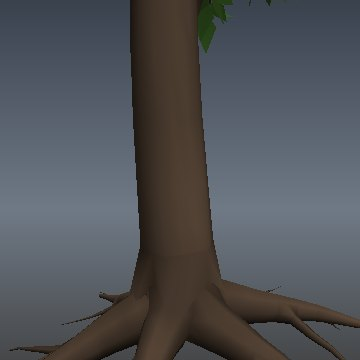
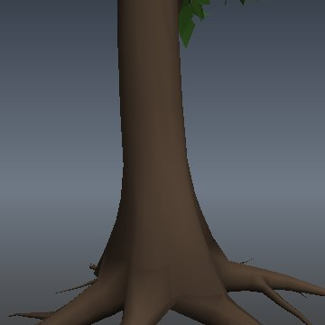
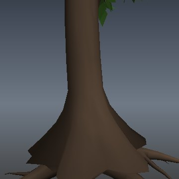
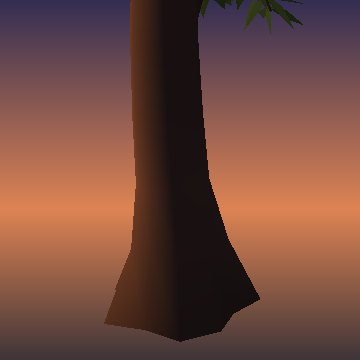
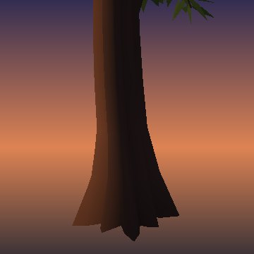
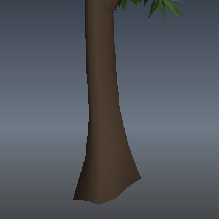
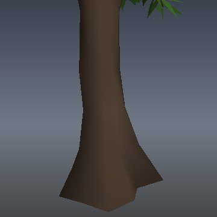
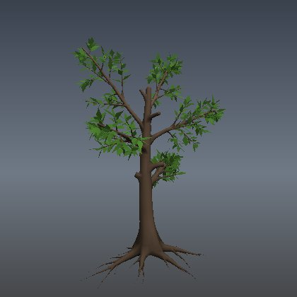

Thickness and bark surface
The Skin section controls the surface around each centre line: how thick a stem is, how it narrows towards the tip and how its cross-section is shaped.
Thickness
- Radius trunk, 0.01 to 2 m
- The radius of the trunk at the ground, in metres.
- Radius (× parent) branches and roots, 0.05 to 1
- The radius of a child at its base as a fraction of the parent's radius at the point where the child starts. Values close to 1 make the child as thick as its parent, as in a fork.
- Taper 0 to 1
- The radius at the tip as a fraction of the radius at the base. 0 ends the stem in a point; 1 keeps it equally thick. Roots narrow quickly near the trunk and then slowly, as real roots do.
The curve button of Taper offers two curves:
- Taper strength varies how quickly the stem narrows along its length. The tip still ends at the Taper value. With a rising curve, the trunk keeps its thickness low down and narrows faster towards the top.
- Thickness along the stem sets the radius directly along the stem, from base to tip. It replaces Taper.
Trunk base
- Buttress flare trunk, 0 to 2
- Widens the base of the trunk. When the trunk has roots, the flare forms ridges that run into the roots, with hollows between them. Without roots it forms a few irregular ridges.



Cross-section
- Sides 3 to 24
- The number of vertices around the stem at the highest level of detail. More sides look rounder and cost more triangles. Lower levels of detail use fewer sides and widen the stem slightly, so it keeps its apparent thickness.
- Flutes 0 to 16
- Lengthwise grooves in the bark. 0 keeps the stem round. On a trunk with roots, the grooves follow the roots: a ridge runs up from every root and a groove lies between neighbouring roots. The panel then shows follow the roots instead of a count.
- Flute depth 0 to 0.8
- The depth of the grooves as a fraction of the radius. Shown when the stem has flutes.
- Flatten 0 to 0.85
- Squashes the cross-section into an ellipse, as in wind-shaped or leaning trunks.
- Bark lumps 0 to 0.6
- Irregular bumps on the surface, as a fraction of the radius. They are part of the geometry, so they show in the silhouette.
- Lump size 0.05 to 3 m
- The size of the lumps. Shown when Bark lumps is above 0.




Branch details
- Branch welding branches, 0 to 1
- Swells the base of each branch into a collar that blends into its parent. See Branch joints.
- Broken branches branches, 0 to 1
- The chance that a branch is broken off. A broken branch is a short, blunt stub with no children and no leaves: dead wood, storm damage or pruned lower branches.
- Stub length 0.03 to 0.9
- The length of the stubs as a fraction of the full branch length. Shown when Broken branches is above 0.

Tip A Broken branches curve that is high near the base of the parent and low at the top breaks off mostly the lower branches, as in trees that grew in a dense forest.